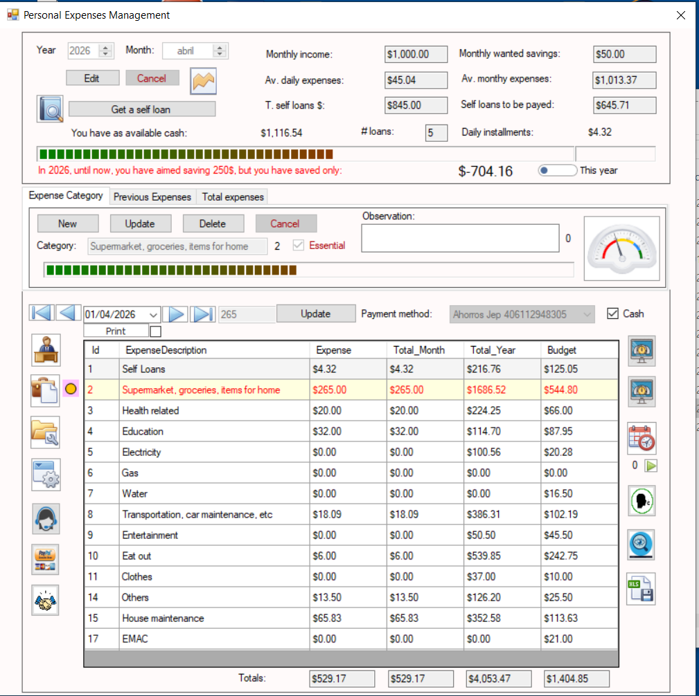
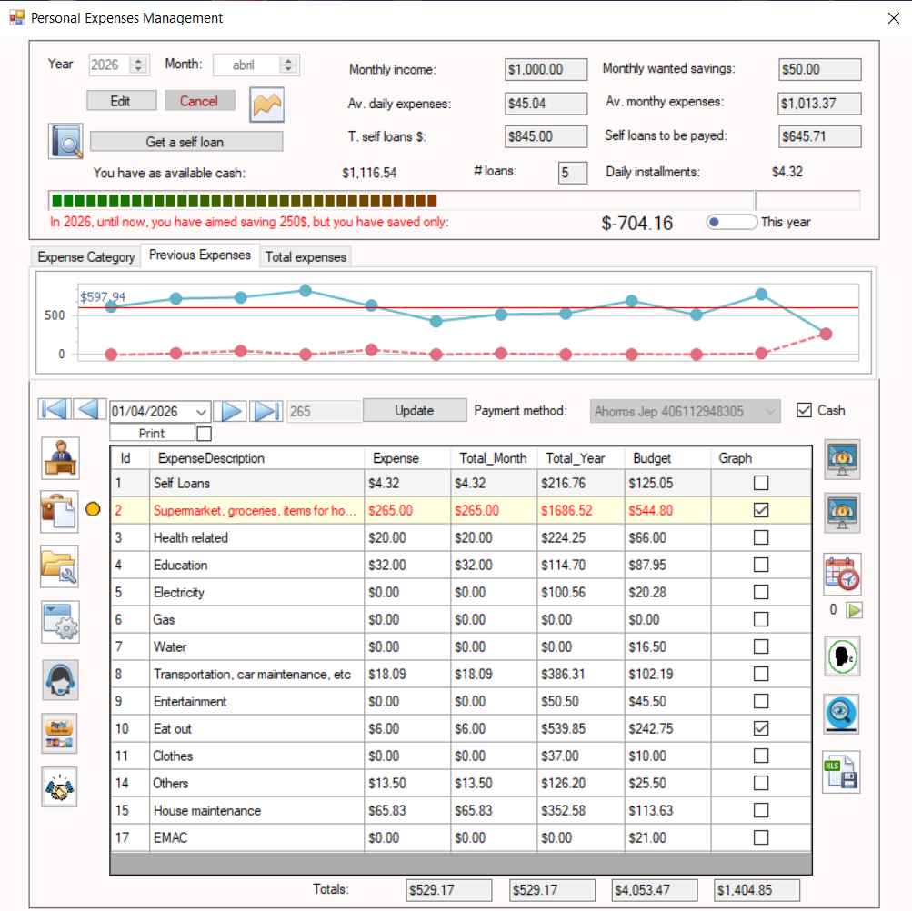
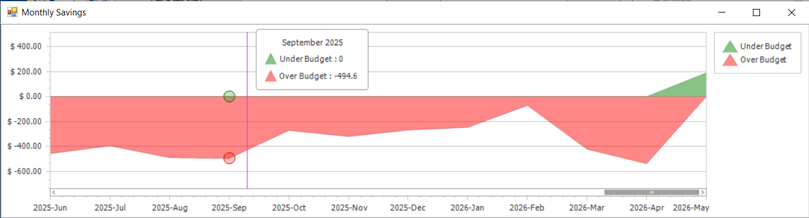
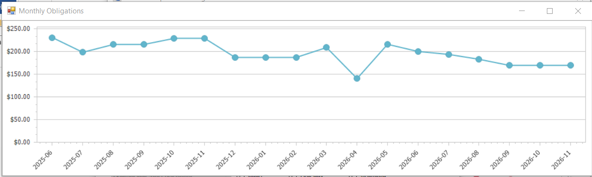
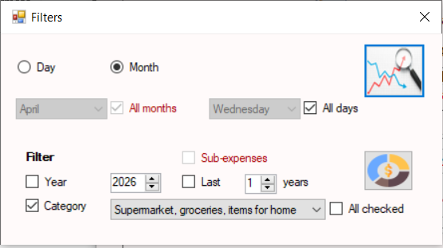
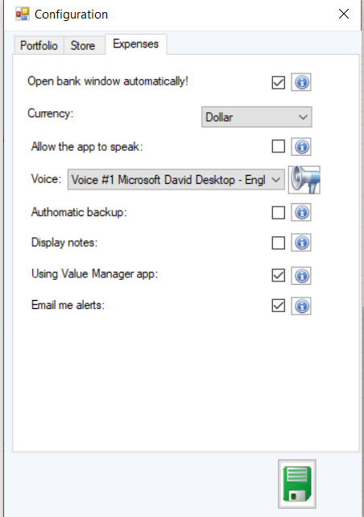

Interface Principale de Gestion des Dépenses
Tableau de bord principal du module de gestion des dépenses personnelles avec accès aux outils financiers, catégories de dépenses et contrôles budgétaires.

Enregistrement des Prêts Personnels
Fenêtre utilisée pour enregistrer des prêts personnels lorsque les dépenses mensuelles dépassent les revenus disponibles.

Analyse des Tendances des Dépenses par Catégorie
Graphique linéaire montrant les dépenses mensuelles de la catégorie sélectionnée sur les 12 derniers mois, y compris les dépenses partielles du mois en cours.

Analyse des Tendances des Dépenses Totales
Graphique linéaire affichant les dépenses mensuelles totales de toutes les catégories durant les 12 derniers mois.

Analyse de l’Épargne et du Surdépassement
Graphique en aires visualisant les économies mensuelles et les situations de dépassement budgétaire au fil du temps.

Gestion des Dépenses Récurrentes
Interface permettant d’enregistrer des dépenses récurrentes et de répartir de gros paiements annuels en mensualités plus gérables.

Projection des Obligations Futures
Graphique linéaire affichant les obligations en attente et les paiements programmés sur les mois futurs.

Configuration des Alertes de Dépenses
Panneau de configuration permettant de créer des alertes de rappel associées à des dépenses et dates d’échéance spécifiques.

Tableau de Bord d’Analyse des Dépenses
Interface centralisée utilisée pour générer des graphiques et analyser dynamiquement les habitudes de dépenses personnelles.

Comparaison Mensuelle des Dépenses
Graphique linéaire comparant les dépenses mensuelles entre les années sélectionnées pour les dépenses totales ou des catégories spécifiques.

Graphique Circulaire de Répartition des Dépenses
Visualisation en graphique circulaire de la répartition des dépenses pour les années et catégories sélectionnées.

Carte Thermique des Dépenses
Visualisation en carte thermique montrant l’intensité des dépenses dans toutes les catégories durant les 12 derniers mois.

Rapports Dynamiques de Dépenses
Module avancé de rapports permettant de regrouper dynamiquement les données par catégorie, année, mois et jour.

Configuration des Paramètres du Système
Panneau de personnalisation permettant d’ajuster les paramètres du logiciel et les préférences de gestion financière personnelle.

Interface de Support Technique
Fenêtre de support offrant une assistance technique et des ressources d’aide directe aux utilisateurs.